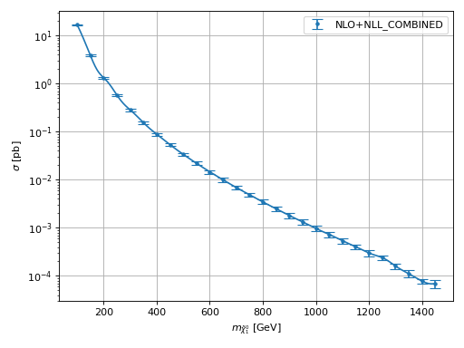
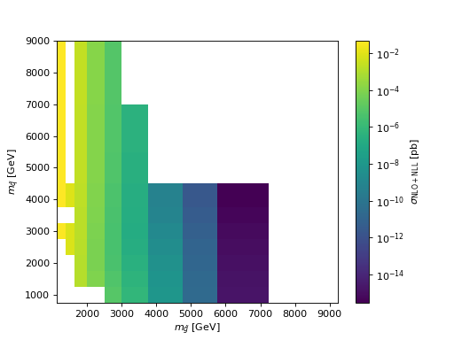
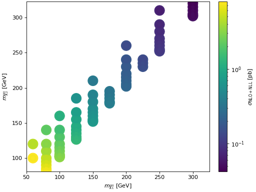

hepi.plot¶
Submodules¶
Package Contents¶
Classes¶
Input for computation and scans. |
Functions¶
Get the input directory. |
|
|
Get the latex name of a particle. |
|
Sets the title on axis axe. |
|
Plot energy on the x-axis. |
|
|
|
|
|
|
|
|
|
Get the mass of particle with id iid out of the list in the "slha" element in the dict. |
|
Creates a plot based on the entries x`and `y in dict_list. |
|
|
|
|
|
|
|
Creates a plot based on the values in x`and `y. |
|
|
|
Examples |
|
Scatter map 2d. |
|
|
|
Creates a scale variance plot with 5 panels (xline). |
|
Creates a scale variance plot with 3 panels (ystacked). |
|
Initialze subplot for Ratio/K plots with another figure below. |
Attributes¶
- class hepi.plot.Input(order, energy, particle1, particle2, slha, pdf_lo, pdf_nlo, mu_f=1.0, mu_r=1.0, pdfset_lo=0, pdfset_nlo=0, precision=0.01, max_iters=50, invariant_mass='auto', result='total', pt='auto', id='', model='', update=True)¶
Bases:
hepi.util.DictDataInput for computation and scans.
- Variables:
order (
Order) – LO, NLO or NLO+NLL computation.energy (int) – CMS energy in GeV.
energyhalf (int) – Halfed energy.
particle1 (int) – PDG identifier of the first final state particle.
particle2 (int) – PDG identifier of the second final state particle.
slha (str) – File path of for the base slha. Modified slha files will be used if a scan requires a change of the input.
pdf_lo (str) – LO PDF name.
pdf_nlo (str) – NLO PDF name.
pdfset_lo (int) – LO PDF member/set id.
pdfset_nlo (int) – NLO PDF member/set id.
pdf_lo_id (int) – LO PDF first member/set id.
pdf_nlo_id (int) – NLO PDF first member/set id.
mu (double) – central scale factor.
mu_f (double) – Factorization scale factor.
mu_r (double) – Renormalization scale factor.
precision (double) – Desired numerical relative precision.
max_iters (int) – Upper limit on integration iterations.
invariant_mass (str) – Invariant mass mode ‘auto = sqrt((p1+p2)^2)’ else value.
pt (str) – Transverse Momentum mode ‘auto’ or value.
result (str) – Result type ‘total’/’pt’/’ptj’/’m’.
id (str) – Set an id of this run.
model (str) – Path for MadGraph model.
update (bool) – Update dependent mu else set to zero.
- Parameters:
order (hepi.order.Order) –
energy (float) –
particle1 (int) –
particle2 (int) –
slha (str) –
pdf_lo (str) –
pdf_nlo (str) –
- has_gluino()¶
- Return type:
bool
- has_neutralino()¶
- Return type:
bool
- has_charginos()¶
- Return type:
bool
- has_weakino()¶
- Return type:
bool
- has_squark()¶
- Return type:
bool
- has_slepton()¶
- Return type:
bool
- hepi.plot.get_output_dir()¶
Get the input directory.
- Returns:
out_dir- Return type:
str
- hepi.plot.replace_macros(s)¶
- Parameters:
s (str) –
- Return type:
str
- hepi.plot.get_name(pid)¶
Get the latex name of a particle.
- Parameters:
pid (int) – PDG Monte Carlo identifier for the particle.
- Returns:
Latex name.
- Return type:
str
Examples
>>> get_name(21) 'g' >>> get_name(1000022) '\\tilde{\\chi}_{1}^{0}'
- hepi.plot.title(i, axe=None, scenario=None, diff_L_R=None, extra='', cms_energy=True, pdf_info=True, id=False, **kwargs)[source]¶
Sets the title on axis axe.
- Parameters:
i (hepi.input.Input) –
- hepi.plot.energy_plot(dict_list, y, yscale=1.0, xaxis='E [GeV]', yaxis='$\\sigma$ [pb]', label=None, **kwargs)[source]¶
Plot energy on the x-axis.
- hepi.plot.mass_plot(dict_list, y, part, logy=True, yaxis='$\\sigma$ [pb]', yscale=1.0, label=None, xaxis=None, **kwargs)[source]¶
- hepi.plot.mass_vplot(dict_list, y, part, logy=True, yaxis='$\\sigma$ [pb]', yscale=1.0, label=None, mask=None, **kwargs)[source]¶
- hepi.plot.get_mass(l, iid)[source]¶
Get the mass of particle with id iid out of the list in the “slha” element in the dict.
- Returns
listof float : masses of particles in each element of the dict list.
- Parameters:
l (dict) –
iid (int) –
- hepi.plot.plot(dict_list, x, y, label=None, xaxis='M [GeV]', yaxis='$\\sigma$ [pb]', ratio=False, K=False, K_plus_1=False, logy=True, yscale=1.0, mask=None, **kwargs)[source]¶
Creates a plot based on the entries x`and `y in dict_list.
Examples
>>> import urllib.request >>> import hepi >>> dl = hepi.load(urllib.request.urlopen( ... "https://raw.githubusercontent.com/fuenfundachtzig/xsec/master/json/pp13_hino_NLO%2BNLL.json" ... )) >>> hepi.plot(dl,"N1","NLO_PLUS_NLL_COMBINED",xaxis="$m_{\\tilde{\\chi}_1^0}$ [GeV]")
(
Source code,png,hires.png,pdf) - Return type:
None
{kind=link}
{kind=link}
- hepi.plot.vplot(x, y, label=None, xaxis='E [GeV]', yaxis='$\\sigma$ [pb]', logy=True, yscale=1.0, interpolate=True, plot_data=True, data_color=None, mask=-1, fill=False, data_fmt='.', fmt='-', print_area=False, sort=True, **kwargs)[source]¶
Creates a plot based on the values in x`and `y.
- hepi.plot.mass_mapplot(dict_list, part1, part2, z, logz=True, zaxis='$\\sigma$ [pb]', zscale=1.0, label=None)[source]¶
- hepi.plot.mapplot(dict_list, x, y, z, xaxis=None, yaxis=None, zaxis=None, **kwargs)[source]¶
Examples
>>> import urllib.request >>> import hepi
>>> dl = hepi.load(urllib.request.urlopen( ... "https://raw.githubusercontent.com/APN-Pucky/xsec/master/json/pp13_SGmodel_GGxsec_NLO%2BNLL.json" ... ),dimensions=2) >>> hepi.mapplot(dl,"gl","sq","NLO_PLUS_NLL_COMBINED",xaxis="$m_{\\tilde{g}}$ [GeV]",yaxis="$m_{\\tilde{q}}$ [GeV]" , zaxis="$\\sigma_{\\mathrm{NLO+NLL}}$ [pb]")
(
Source code,png,hires.png,pdf)
{kind=link}
{kind=link}
- hepi.plot.scatterplot(dict_list, x, y, z, xaxis=None, yaxis=None, zaxis=None, **kwargs)[source]¶
Scatter map 2d. Central color is the central value, while the inner and outer ring are lower and upper bounds of the uncertainty interval.
Examples
>>> import urllib.request >>> import hepi >>> dl = hepi.load(urllib.request.urlopen( ... "https://raw.githubusercontent.com/APN-Pucky/xsec/master/json/pp13_hinosplit_N2N1_NLO%2BNLL.json" ... ),dimensions=2) >>> hepi.scatterplot(dl,"N1","N2","NLO_PLUS_NLL_COMBINED",xaxis="$m_{\\tilde{\\chi}_1^0}$ [GeV]",yaxis="$m_{\\tilde{\\chi}_2^0}$ [GeV]" , zaxis="$\\sigma_{\\mathrm{NLO+NLL}}$ [pb]")
(
Source code,png,hires.png,pdf)
{kind=link}
{kind=link}
- hepi.plot.scale_plot(dict_list, vl, seven_point_band=False, cont=False, error=True, li=None, plehn_color=False, yscale=1.0, unit='pb', yaxis=None, **kwargs)[source]¶
Creates a scale variance plot with 5 panels (xline).